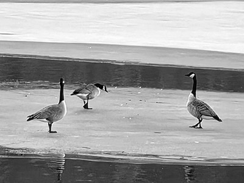
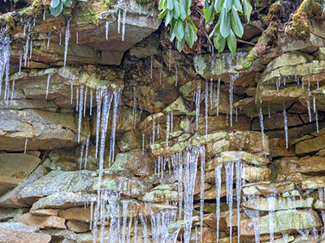

Geese on ice
A quiet wildlife moment in natural winter conditions.
Gallery
A collection of wildlife and nature photographs captured as they happened. No fake skies. No forced perfection. Just nature as it is.
Wildlife and Landscape Gallery
These images show wildlife and landscapes in natural conditions. More photos will be added as the collection grows.

A quiet wildlife moment in natural winter conditions.

A real winter moment where icecicles formed from the cold temperatures.